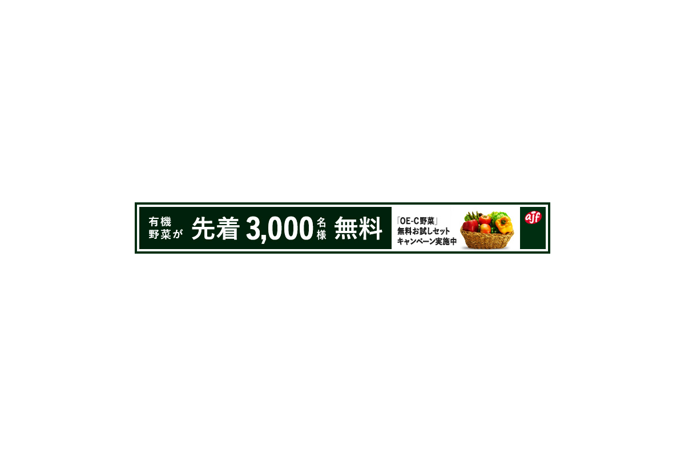
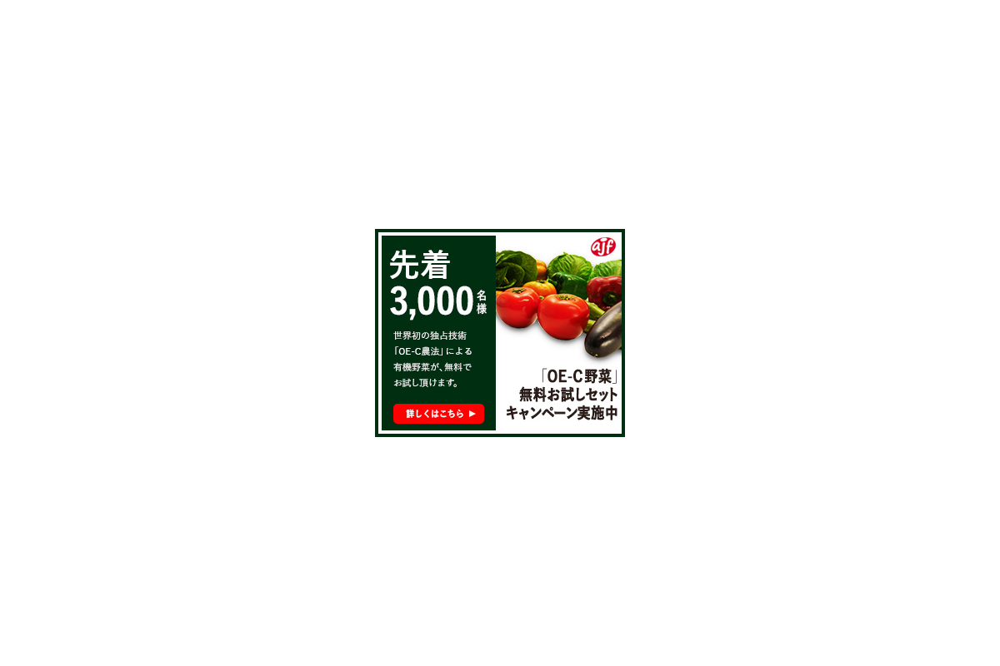
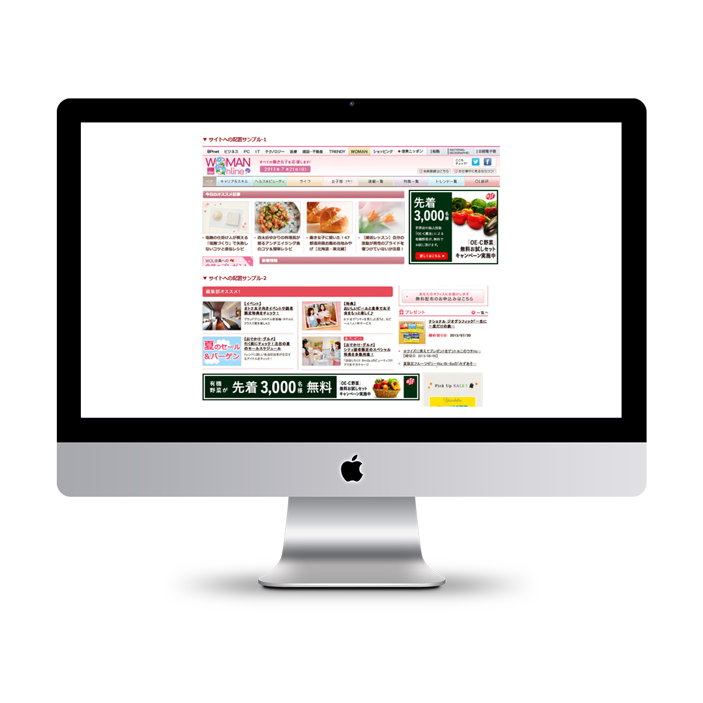

toru otani

Photoshop課題「バナーデザイン」(訓練校課題)
- ・担当範囲
- 企画 / ディレクション / デザイン / テキスト作成
- ・制作時間
- 企画 6/h デザイン制作 8/h 制作時期：2017/7/9～2017/7/10
―
コンセプト
有機・無農薬野菜の宅配サービス「OE-C野菜」を展開する「株式会社ajf」という会社を架空に設定し、こちらも架空のキャンペーンである「OE-C野菜無料お試しセット」のキャンペーンバナーを制作した。本バナーの成果としては、バナーをクリックしてもらい、お申込みフォームのあるキャンペーンLPへの誘導を想定している。
デザインのコンセプトは、本キャンペーンの強みである「先着3000名」をまず第一に際立たせようと意図した。そのため、テキストを配置するスペースと商品画像のスペースとで分割したデザインを用いた。
また色の構成は野菜の赤や黄といった暖色が映えるように、緑を基調にしつつ、白く抜かれたテキスト部分を際立たせるため彩度を低めに設定した。